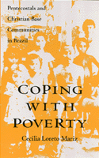

<body bgcolor="#FFFFFF" text="#000000" link="#0000FF" vlink="#CC0000" alink="#CC0000"><center><hr width="350" size="1" align="center" noshade>Evangelical religion plays a new role in the lives of Brazil's poor<hr width="350" size="1" align="center" noshade><p><a href="https://cdcshoppingcart.uchicago.edu/Cart/ChicagoBook.aspx?ISBN=9781566391122&&PRESS=temple" target="_top">Buy this book!</a> | <a href="https://cdcshoppingcart.uchicago.edu/Cart/Cart.aspx?PRESS=temple" target="_top">View Cart</a> | <a href="https://cdcshoppingcart.uchicago.edu/Cart/Cart.aspx?PRESS=temple" target="_top">Check Out</a></p><p></p></center><!--none//--><h1>Coping with Poverty</h1>
<H2>Pentecostals and Christian Base Communities in Brazil</H2>
<h3>Cecília Loreto Mariz</h3>
<P>cloth 1-56639-112-1 $80.50, Jan 94, <FONT COLOR=#990033>Out of Stock Unavailable</FONT>
<br>paper 1-56639-113-X $35.95, Apr 94, <FONT COLOR=#990033>Available</FONT>
<BR> 208 pp
5.5x8.25
</P><BLOCKQUOTE><I>"Few studies exist to satisfy the growing demand for solid scholarship on Latin American Protestants. Not only does this author's work fill a void, but it will help set the standards for future studies. This timely book makes an important contribution to our knowledge of the concrete ways in which faith and religious affiliation affect the daily lives of the Latin American poor."</I>
<br>&#151<b>Hannah Stewart-Gambino</b>, Lehigh University<I></I></BLOCKQUOTE>
<p>Only by understanding the enduring poverty of Brazil can one hope to understand the recent growth of Protestant evangelical churches there, Cecília Loreto Mariz contends. Her study investigates how religious groups support individualism and encourage the poor to organize. Groups with shared values are then able to develop strategies to cope with poverty and, ultimately, to transform the social structure.
<p>Interviews with members and leaders of religious groups, accounts of meetings, and close readings of religious literature contribute to a realistic account of Christian base communities and Assembly of God churches, folk Catholic tradition, and Afro Brazilian Spiritism.
<BR>&nbsp;<h2>Contents</h2><P>
<p>Acknowledgments
<br>Introduction
<br>1. Religion in Brazil
<br>2. Coping with Poverty and Religious Affiliation in Brazil
<br>3. A Comparison of Religious Worldviews
<br>4. Material Strategies for Coping with Poverty
<br>5. Political Strategies for Coping with Poverty
<br>6. Cultural Strategies for Coping with Poverty
<br>Conclusion
<br>Notes
<br>References
<br>Index
</P><BR>&nbsp;<H2>About the Author(s)</H2>
<P><b>Cecília Loreto Mariz</b>, a Brazilian national, teaches Sociology at the Universidade Federal de Pernambuco in Recife, Brazil.</P>
<BR><H2>Subject Categories</H2>
<p><A HREF="/tempress/latin.html" TARGET="_top">Latin American/Caribbean Studies</a>
<BR><A HREF="/tempress/sociology.html" TARGET="_top">Sociology</a>
<BR><A HREF="/tempress/religion.html" TARGET="_top">Religion</a>
</p>
<p align="center"><a href="https://cdcshoppingcart.uchicago.edu/Cart/ChicagoBook.aspx?ISBN=9781566391122&&PRESS=temple" target="_top">Buy this book!</a> | <a href="https://cdcshoppingcart.uchicago.edu/Cart/Cart.aspx?PRESS=temple" target="_top">View Cart</a> | <a href="https://cdcshoppingcart.uchicago.edu/Cart/Cart.aspx?PRESS=temple" target="_top">Check Out</a></p><p><font face="Arial" size="1"><a href="copyright.html" onMouseOver="window.status='Web Copyright Policy';return true;" onMouseOut="window.status=''" title="Web Copyright Policy">&copy;</a> 2015 <a href="http://www.temple.edu" target="new" onMouseOver="window.status='Link to Temple University home page';return true;" onMouseOut="window.status=''" title="Link to Temple University home page">Temple University</a>. All Rights Reserved. http://www.temple.edu/tempress/titles/923_reg.html</font></p>